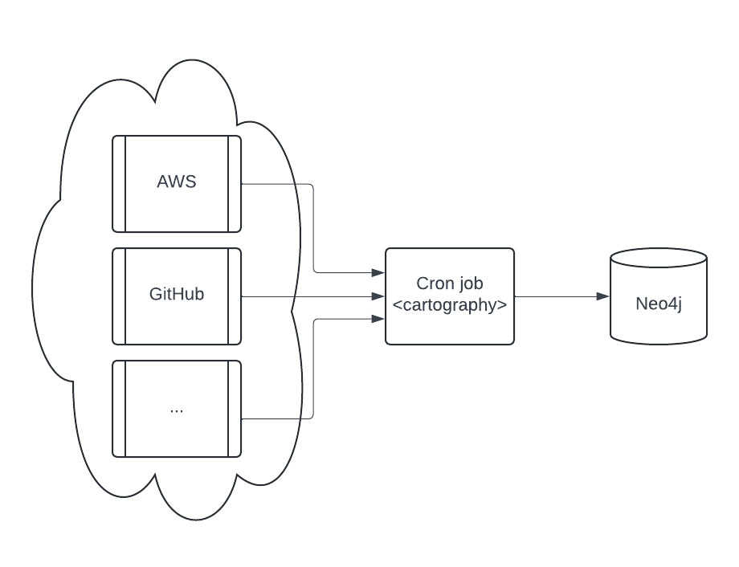
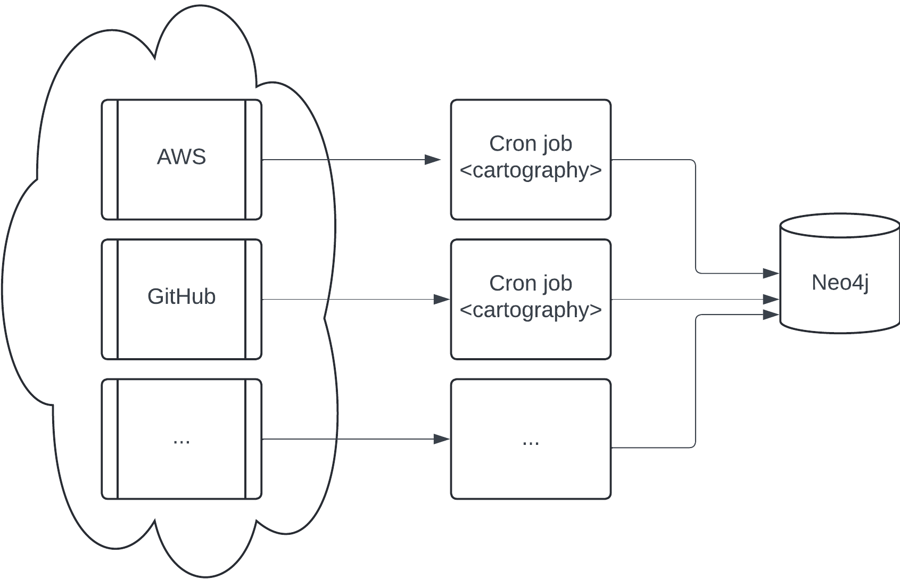

Cartography Production Operations¶
This document contains tips for running Cartography in production.
Deployments¶
Simple¶
The simplest production deployment involving Cartography looks something like this:
{kind=link}
Configure a Neo4j database. Specifics on this are out of scope of this document; refer to Neo4j’s resources on how to do this.
Configure a scheduled task (e.g. a cron job) to be able to access one or more data providers. See the modules section for specifics on each. We recommend that you run the cron job on a separate machine from the Neo4j database.
Parallel jobs¶
If a single cartography job takes longer than you would like, you can configure jobs to run in parallel where each job syncs different resources.
{kind=link}
Making sure that 2 resources of the same type never run at the same time is critical: you will encounter race conditions where one job may delete the resources synced by the other.
The above diagram shows AWS and GitHub running on different jobs, but you can get more granular than that: as an example, you can have job 1 run AWS S3 and job 2 run AWS RDS in parallel with no negative effects.
Maintaining a up-to-date picture of your infrastructure¶
Running cartography ensures that your Neo4j instance contains the most recent snapshot of your infrastructure. Here’s
how that process works.
Cleanup jobs¶
Each node and relationship created or updated during the sync will have their lastupdated field set to the
update_tag. At the end of a sync run, nodes and relationships with out-of-date lastupdated fields are considered
stale and will be deleted via a cleanup job.
Sync frequency¶
To keep data updated, you can run cartography as part of a periodic script (cronjobs in Linux, scheduled tasks in
Windows). Determine your needs for data freshness and adjust accordingly.
Observability¶
statsd¶
Cartography can be configured to send metrics to a statsd server. Specify the
--statsd-enabled flag when running cartography for sync execution times to be recorded and sent to
127.0.0.1:8125 by default (these options are also configurable with the --statsd-host and --statsd-port options).
You can also provide your own --statsd-prefix to make these metrics easier to find in your own environment.
Docker image¶
A production-ready docker image is available in GitHub Container Registry. We recommend that you avoid using the :latest tag and instead
use the tag or digest associated with your desired release version, e.g.
docker pull ghcr.io/lyft/cartography:0.61.0
This image can then be ran with any of your desired command line flags:
docker run --rm ghcr.io/lyft/cartography:0.61.0 --help